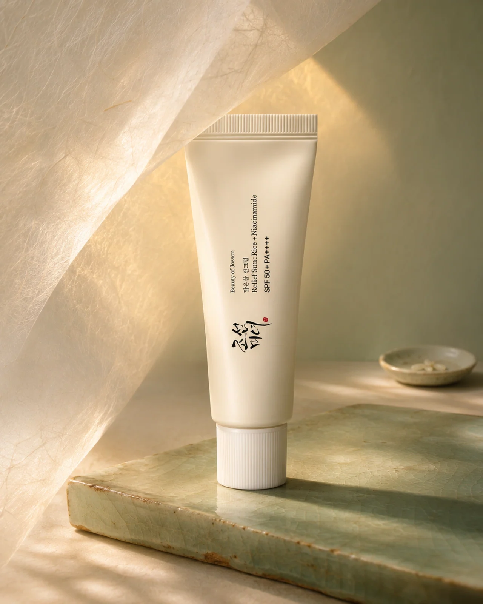
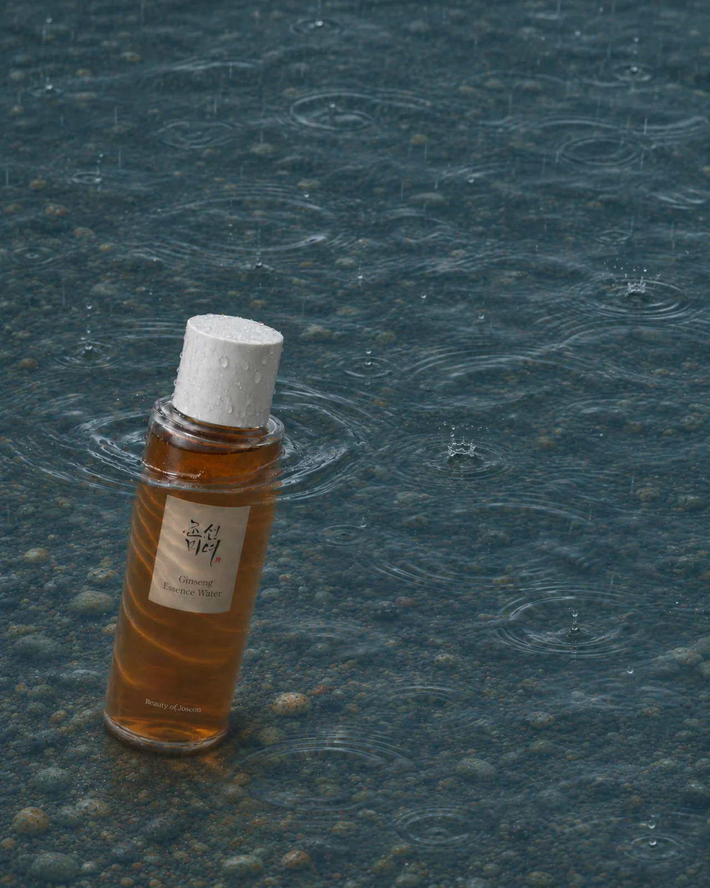
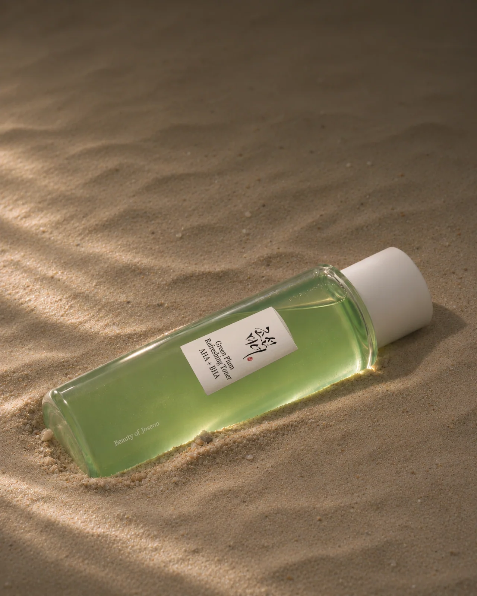
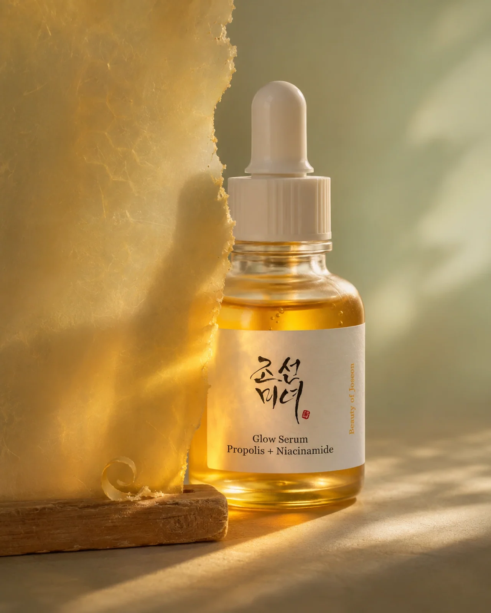
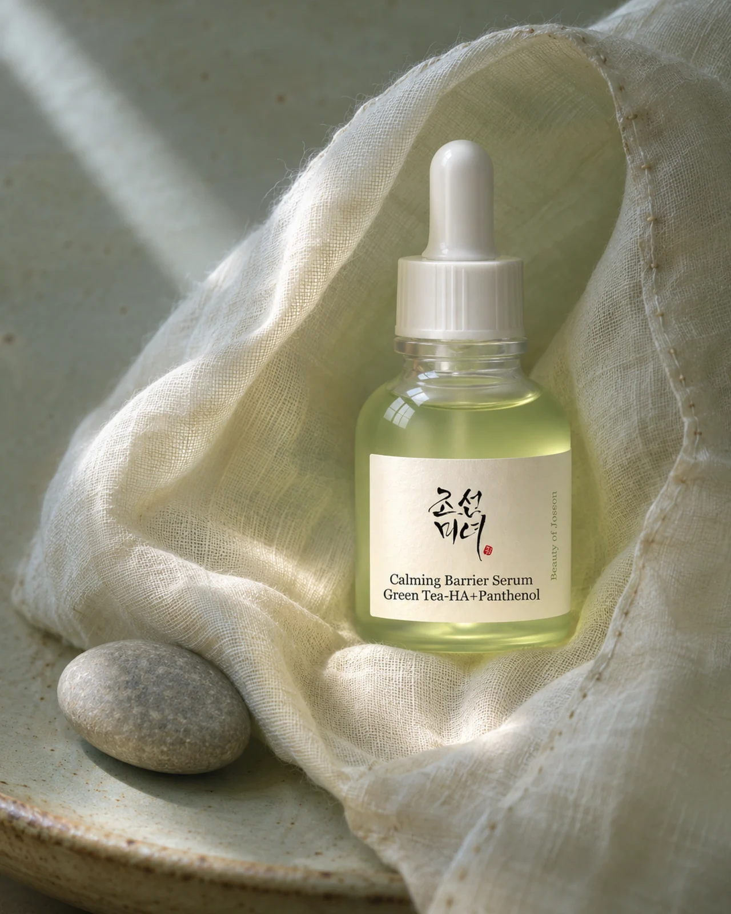
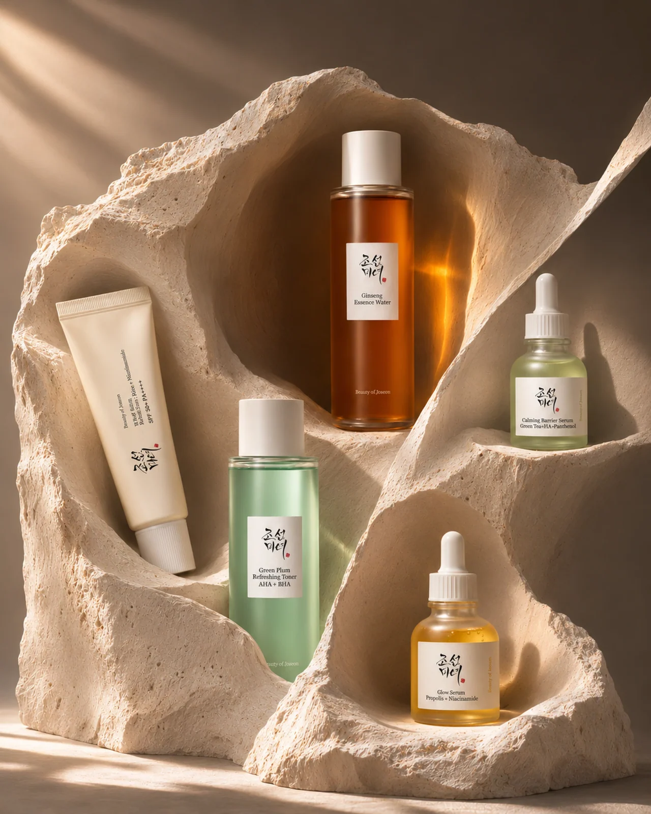

THE QUIET BETWEEN THINGS
Beauty of Joseon in six private moments of light, material and stillness.

The idea
A quiet visual world is built from small physical events: light folding through paper, rain settling around an amber bottle, glass resting in sand, sunlight crossing beeswax, a serum sheltered by muslin, and a collection held in sculptural recesses. The images invite a slower second look.
Making the world
The series uses current product references, including the Calming Barrier Serum and a corrected Green Plum toner label. The lake, sand, fabric and mineral settings are AI-assisted digital constructions, not photographed sets. The 3840 × 4800 files are interpolated from smaller sources; remaining fine package details need official artwork review for commercial use.
The series




